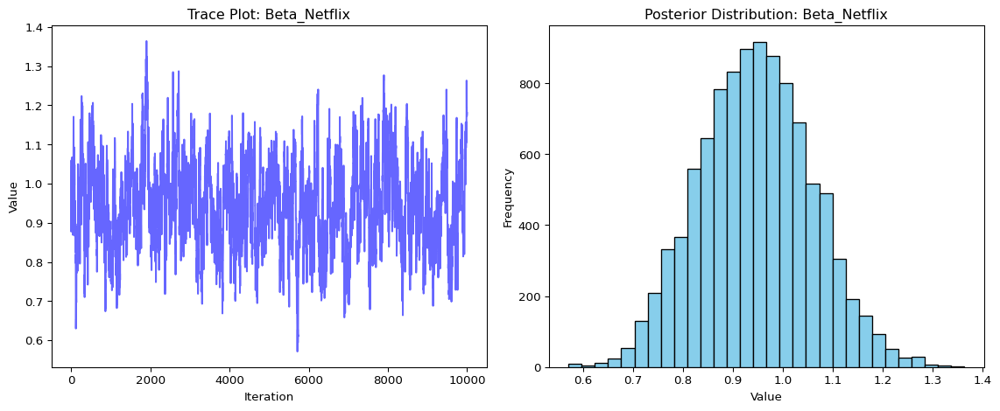

This assignment expores two methods for estimating the MNL model: (1) via Maximum Likelihood, and (2) via a Bayesian approach using a Metropolis-Hastings MCMC algorithm.
1. Likelihood for the Multi-nomial Logit (MNL) Model
Suppose we have \(i=1,\ldots,n\) consumers who each select exactly one product \(j\) from a set of \(J\) products. The outcome variable is the identity of the product chosen \(y_i \in \{1, \ldots, J\}\) or equivalently a vector of \(J-1\) zeros and \(1\) one, where the \(1\) indicates the selected product. For example, if the third product was chosen out of 3 products, then either \(y=3\) or \(y=(0,0,1)\) depending on how we want to represent it. Suppose also that we have a vector of data on each product \(x_j\) (eg, brand, price, etc.).
We model the consumer’s decision as the selection of the product that provides the most utility, and we’ll specify the utility function as a linear function of the product characteristics:
\[ U_{ij} = x_j'\beta + \epsilon_{ij} \]
where \(\epsilon_{ij}\) is an i.i.d. extreme value error term.
The choice of the i.i.d. extreme value error term leads to a closed-form expression for the probability that consumer \(i\) chooses product \(j\):
A clever way to write the individual likelihood function for consumer \(i\) is the product of the \(J\) probabilities, each raised to the power of an indicator variable (\(\delta_{ij}\)) that indicates the chosen product:
We will simulate data from a conjoint experiment about video content streaming services. We elect to simulate 100 respondents, each completing 10 choice tasks, where they choose from three alternatives per task. For simplicity, there is not a “no choice” option; each simulated respondent must select one of the 3 alternatives.
Each alternative is a hypothetical streaming offer consistent of three attributes: (1) brand is either Netflix, Amazon Prime, or Hulu; (2) ads can either be part of the experience, or it can be ad-free, and (3) price per month ranges from $4 to $32 in increments of $4.
The part-worths (ie, preference weights or beta parameters) for the attribute levels will be 1.0 for Netflix, 0.5 for Amazon Prime (with 0 for Hulu as the reference brand); -0.8 for included adverstisements (0 for ad-free); and -0.1*price so that utility to consumer \(i\) for hypothethical streaming service \(j\) is
where the variables are binary indicators and \(\varepsilon\) is Type 1 Extreme Value (ie, Gumble) distributed.
The following code provides the simulation of the conjoint data.
Note
# set seed for reproducibility
set.seed(123)
# define attributes
brand <- c("N", "P", "H") # Netflix, Prime, Hulu
ad <- c("Yes", "No")
price <- seq(8, 32, by=4)
# generate all possible profiles
profiles <- expand.grid(
brand = brand,
ad = ad,
price = price
)
m <- nrow(profiles)
# assign part-worth utilities (true parameters)
b_util <- c(N = 1.0, P = 0.5, H = 0)
a_util <- c(Yes = -0.8, No = 0.0)
p_util <- function(p) -0.1 * p
# number of respondents, choice tasks, and alternatives per task
n_peeps <- 100
n_tasks <- 10
n_alts <- 3
# function to simulate one respondent’s data
sim_one <- function(id) {
datlist <- list()
# loop over choice tasks
for (t in 1:n_tasks) {
# randomly sample 3 alts (better practice would be to use a design)
dat <- cbind(resp=id, task=t, profiles[sample(m, size=n_alts), ])
# compute deterministic portion of utility
dat$v <- b_util[dat$brand] + a_util[dat$ad] + p_util(dat$price) |> round(10)
# add Gumbel noise (Type I extreme value)
dat$e <- -log(-log(runif(n_alts)))
dat$u <- dat$v + dat$e
# identify chosen alternative
dat$choice <- as.integer(dat$u == max(dat$u))
# store task
datlist[[t]] <- dat
}
# combine all tasks for one respondent
do.call(rbind, datlist)
}
# simulate data for all respondents
conjoint_data <- do.call(rbind, lapply(1:n_peeps, sim_one))
# remove values unobservable to the researcher
conjoint_data <- conjoint_data[ , c("resp", "task", "brand", "ad", "price", "choice")]
# clean up
rm(list=setdiff(ls(), "conjoint_data"))
3. Preparing the Data for Estimation
The “hard part” of the MNL likelihood function is organizing the data, as we need to keep track of 3 dimensions (consumer \(i\), covariate \(k\), and product \(j\)) instead of the typical 2 dimensions for cross-sectional regression models (consumer \(i\) and covariate \(k\)). The fact that each task for each respondent has the same number of alternatives (3) helps. In addition, we need to convert the categorical variables for brand and ads into binary variables. todo: reshape and prep the data
import pandas as pd# Load the datasetconjoint_data = pd.read_csv("conjoint_data.csv")# One-hot encode 'brand' and 'ad' columns (Hulu and ad-free are the baseline)conjoint_data_prepped = pd.get_dummies(conjoint_data, columns=["brand", "ad"], drop_first=True)# Create a unique identifier for each choice setconjoint_data_prepped["choice_set"] = ( conjoint_data_prepped["resp"].astype(str) +"_"+ conjoint_data_prepped["task"].astype(str))# Sort the dataconjoint_data_prepped = conjoint_data_prepped.sort_values(by=["resp", "task"])# Preview the first few rowsconjoint_data_prepped.head()
resp
task
choice
price
brand_N
brand_P
ad_Yes
choice_set
0
1
1
1
28
True
False
True
1_1
1
1
1
0
16
False
False
True
1_1
2
1
1
0
16
False
True
True
1_1
3
1
2
0
32
True
False
True
1_2
4
1
2
1
16
False
True
True
1_2
4. Estimation via Maximum Likelihood
todo: Code up the log-likelihood function.todo: Use optim() in R or scipy.optimize() in Python to find the MLEs for the 4 parameters (\(\beta_\text{netflix}\), \(\beta_\text{prime}\), \(\beta_\text{ads}\), \(\beta_\text{price}\)), as well as their standard errors (from the Hessian). For each parameter construct a 95% confidence interval.
todo: code up a metropolis-hasting MCMC sampler of the posterior distribution. Take 11,000 steps and throw away the first 1,000, retaining the subsequent 10,000.
hint: Use N(0,5) priors for the betas on the binary variables, and a N(0,1) prior for the price beta.
_hint: instead of calculating post=lik*prior, you can work in the log-space and calculate log-post = log-lik + log-prior (this should enable you to re-use your log-likelihood function from the MLE section just above)_
hint: King Markov (in the video) use a candidate distribution of a coin flip to decide whether to move left or right among his islands. Unlike King Markov, we have 4 dimensions (because we have 4 betas) and our dimensions are continuous. So, use a multivariate normal distribution to pospose the next location for the algorithm to move to. I recommend a MNV(mu, Sigma) where mu=c(0,0,0,0) and sigma has diagonal values c(0.05, 0.05, 0.05, 0.005) and zeros on the off-diagonal. Since this MVN has no covariances, you can sample each dimension independently (so 4 univariate normals instead of 1 multivariate normal), where the first 3 univariate normals are N(0,0.05) and the last one if N(0,0.005).
todo: report the 4 posterior means, standard deviations, and 95% credible intervals and compare them to your results from the Maximum Likelihood approach.
import numpy as npimport pandas as pdfrom sklearn.preprocessing import LabelEncoder# Inputs from earlier stepsX = conjoint_data_prepped[['brand_N', 'brand_P', 'ad_Yes', 'price']].valuesy = conjoint_data_prepped['choice'].valueschoice_set_ids = conjoint_data_prepped['choice_set'].values# Encode choice setsgroup_ids = LabelEncoder().fit_transform(choice_set_ids)num_sets = group_ids.max() +1# Build group mapping matrixgroup_matrix = np.zeros((num_sets, X.shape[0]))group_matrix[group_ids, np.arange(X.shape[0])] =1X = np.asarray(X, dtype=float)assert X.ndim ==2and X.shape[1] ==4def vectorized_log_likelihood(beta): beta = np.asarray(beta, dtype=float)if beta.ndim !=1or beta.shape[0] !=4:print(f"BAD BETA: {beta}, shape: {beta.shape}")raiseValueError("beta must be a 1D array of length 4.") utilities = X @ betaifisinstance(utilities, float):raiseTypeError("X @ beta returned a float. Check that X is a 2D NumPy array.") exp_util = np.exp(utilities) denom = group_matrix @ exp_util prob = exp_util / denom[group_ids]return np.sum(np.log(prob[y ==1]))# Log-prior (Normal priors)def log_prior(beta): beta = np.asarray(beta) prior_sd = np.array([5.0, 5.0, 5.0, 1.0])return-0.5* np.sum((beta / prior_sd) **2)# Log-posteriordef log_posterior(beta):return vectorized_log_likelihood(beta) + log_prior(beta)# Proposal SDsproposal_sd = np.array([0.05, 0.05, 0.05, 0.005])# Metropolis-Hastings MCMCdef metropolis_hastings(start, iterations, burn_in): beta_current = np.asarray(start) samples = []for i inrange(iterations): proposal = beta_current + np.random.normal(0, proposal_sd) log_alpha = log_posterior(proposal) - log_posterior(beta_current)if np.log(np.random.rand()) < log_alpha: beta_current = proposal # Acceptif i >= burn_in: samples.append(beta_current.copy())return np.array(samples)# Run MCMCnp.random.seed(42)posterior_samples = metropolis_hastings(start=np.zeros(4), iterations=11000, burn_in=1000)# Summarize posteriorposterior_means = posterior_samples.mean(axis=0)posterior_stds = posterior_samples.std(axis=0)posterior_cis = np.percentile(posterior_samples, [2.5, 97.5], axis=0).T# Format outputparams = ["Beta_Netflix", "Beta_Prime", "Beta_Ads", "Beta_Price"]bayes_results = pd.DataFrame({"Parameter": params,"Posterior Mean": posterior_means,"Std. Dev": posterior_stds,"95% CI Lower": posterior_cis[:, 0],"95% CI Upper": posterior_cis[:, 1]})bayes_results
Parameter
Posterior Mean
Std. Dev
95% CI Lower
95% CI Upper
0
Beta_Netflix
0.945757
0.112710
0.732071
1.170714
1
Beta_Prime
0.506718
0.113585
0.288233
0.735044
2
Beta_Ads
-0.732612
0.083074
-0.890905
-0.566756
3
Beta_Price
-0.099754
0.006286
-0.111863
-0.087338
todo: for at least one of the 4 parameters, show the trace plot of the algorithm, as well as the histogram of the posterior distribution.
import matplotlib.pyplot as plt# Trace plot and histogram for Beta_Netflixbeta_idx =0# Index 0 = Beta_Netflixparam_name ="Beta_Netflix"plt.figure(figsize=(12, 5))# Trace plotplt.subplot(1, 2, 1)plt.plot(posterior_samples[:, beta_idx], color="blue", alpha=0.6)plt.title(f"Trace Plot: {param_name}")plt.xlabel("Iteration")plt.ylabel("Value")# Histogramplt.subplot(1, 2, 2)plt.hist(posterior_samples[:, beta_idx], bins=30, color="skyblue", edgecolor="black")plt.title(f"Posterior Distribution: {param_name}")plt.xlabel("Value")plt.ylabel("Frequency")plt.tight_layout()plt.show()

6. Discussion
todo: Suppose you did not simulate the data. What do you observe about the parameter estimates? What does \(\beta_\text{Netflix} > \beta_\text{Prime}\) mean? Does it make sense that \(\beta_\text{price}\) is negative?
todo: At a high level, discuss what change you would need to make in order to simulate data from — and estimate the parameters of — a multi-level (aka random-parameter or hierarchical) model. This is the model we use to analyze “real world” conjoint data.
Interpreting Parameter Estimates Even if we didn’t simulate the data ourselves, we can still learn a lot from the parameter estimates we got. For example, the fact that \(\beta_\text{Netflix} > \beta_\text{Prime}\) means that, on average, people in our sample liked Netflix more than Prime. Since Hulu was the baseline (omitted category), this also tells us that Prime was preferred over Hulu, but not as much as Netflix. So in terms of overall appeal, Netflix came out on top.
We also saw that the estimate for \(\beta_\text{price}\) was negative. This is what we expect: as the price of a streaming plan goes up, people are less likely to choose it. That makes sense since higher prices usually make a product less attractive.
The estimate for the ad variable was also negative. This means that people don’t like having ads in their streaming experience. Given the choice, they’re more likely to pick a service that is ad-free.
Overall, all of our parameter estimates line up well with what we would expect based on common sense. People prefer Netflix, dislike ads, and try to avoid higher prices.
Toward a Multi-Level (Hierarchical) Model
In real-world data, not everyone values things the same way. Some people may care a lot about price, while others focus more on the brand or whether the service has ads. A single set of average parameters doesn’t always capture this variation.
A multi-level model helps us deal with that. Instead of assuming everyone shares the same preferences, this model assumes each person has their own set of part-worth utilities (or \(\beta\) values). These individual-level betas come from a larger population distribution, usually assumed to be normal:
This means that we treat \(\mu\) as the average preference across people, and \(\Sigma\) captures how much people vary in their preferences.
If we wanted to simulate data under this kind of model, we would first draw a \(\beta\) vector for each person from a multivariate normal distribution. Then we would use that \(\beta_i\) to simulate choices for that specific person. This lets us build realistic datasets where everyone thinks a little differently.
Estimating these models is a bit more advanced. We often use Bayesian methods like Gibbs sampling or Hamiltonian Monte Carlo (HMC), or we use simulated maximum likelihood in a frequentist framework. These methods take more time and computing power, but they allow us to capture much richer information from our data.
In short, multi-level models are a powerful way to move beyond average preferences and better reflect how real people make choices.